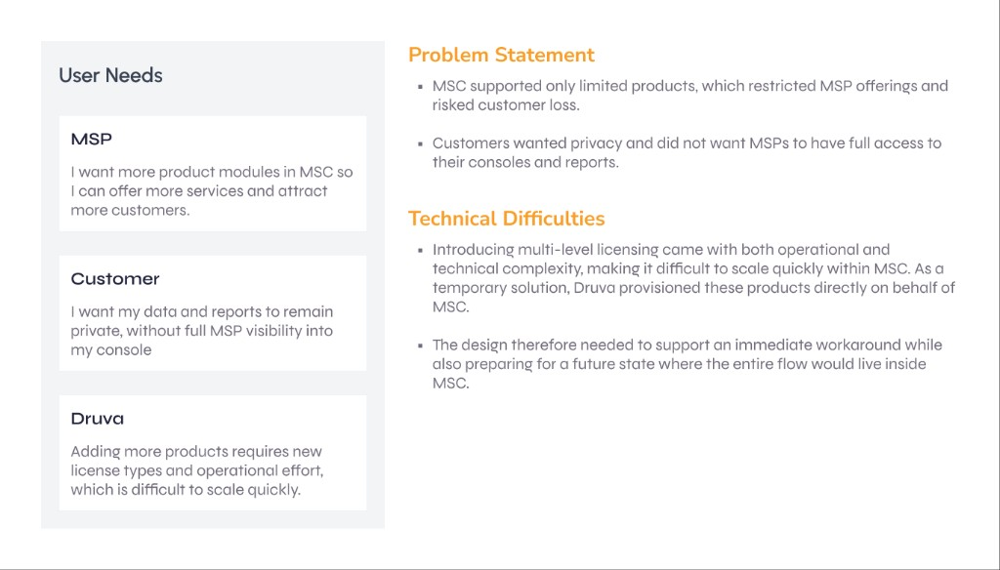
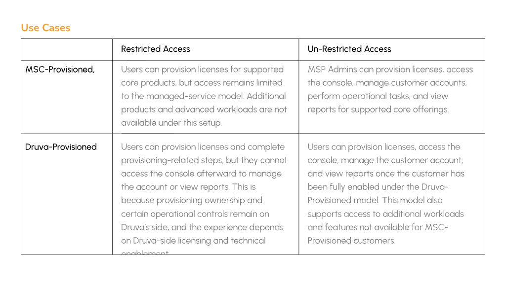

Synthesis
Before it was a clean model it was a mess — three actor types, overlapping workflows, and edge cases where provisioning, access and privacy rules contradicted each other.
→ scroll

→ scroll


Scoped out: automated bulk migration of legacy customers — manual path shipped first because licensing validation required per-customer review.